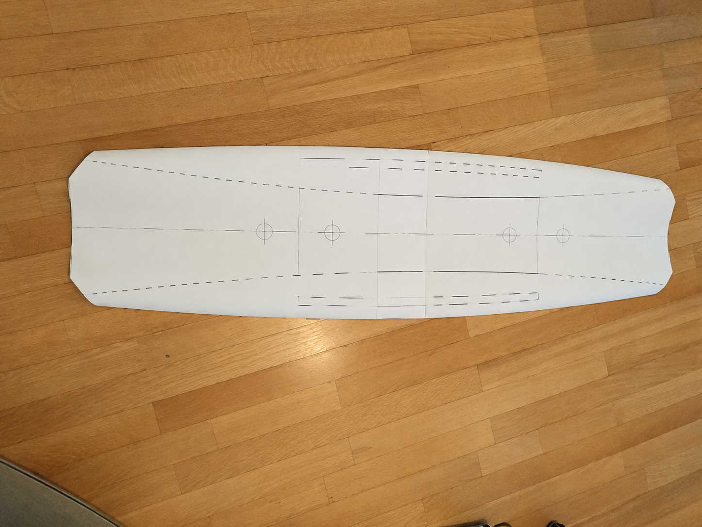
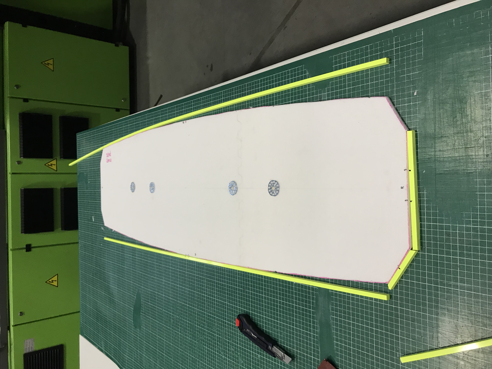
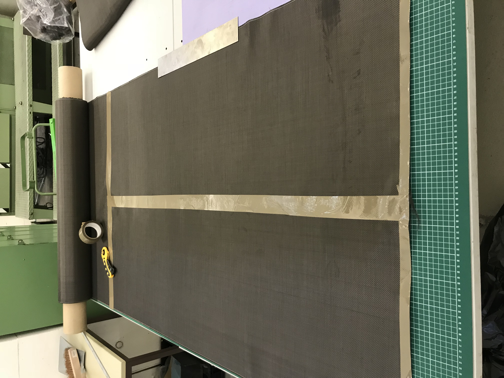
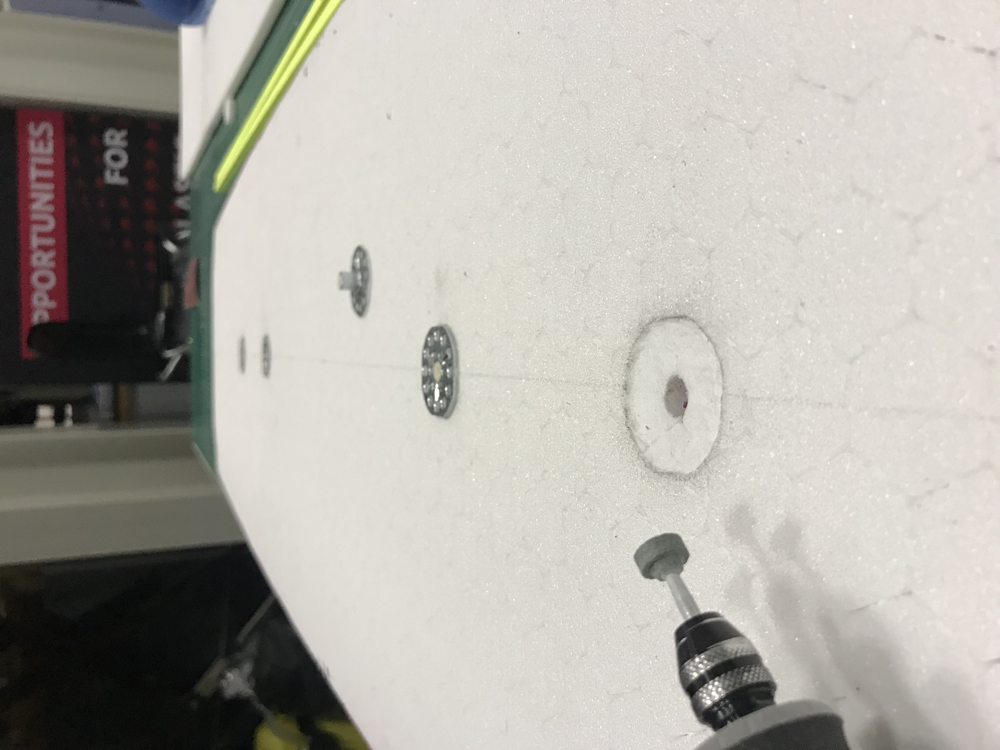
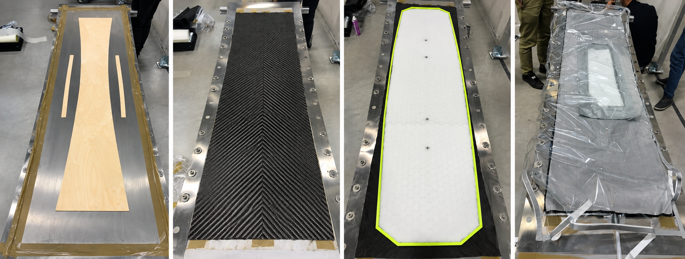

How do you turn a performance target into a rideable carbon-fibre wakeboard?
In this university project, we designed, manufactured and tested a composite wakeboard from the ground up. Starting with requirements for geometry, weight and flex, we developed the sandwich structure, manufactured the board by vacuum infusion and compared the finished product against the original engineering calculations.

The challenge
A wakeboard has to combine several conflicting requirements. It needs sufficient bending stiffness and strength while remaining lightweight, but at the same time requires enough flexibility to provide predictable and comfortable riding behaviour.
Geometry also directly affects performance. Outline, rocker, channels, sidewalls and fins influence stability, turning behaviour, edge control and landings.
The project therefore started with an engineering specification covering both structural and riding requirements before the first material was cut.
From requirements to design
Defined the requirements
Established targets for board dimensions, weight, flex and structural loading together with functional requirements for rocker, channels, sidewalls and bindings.
Designed the board geometry
Developed a symmetric twin shape with a continuous rocker, defined sidecut and integrated channels to balance stability, manoeuvrability and edge control.
Engineered the sandwich structure
Combined a lightweight PET foam core with carbon-fibre fabric and recycled carbon-fibre nonwoven layers to create the required structural behaviour.
Predicted the flex
Applied laminate and sandwich theory to calculate the bending stiffness and predict the deflection under a three-point bending load.
Designed for manufacturing
Planned the laminate, resin demand, inserts, ABS sidewalls, channel tooling and vacuum setup before manufacturing the board.

Construction
PET foam core
A 10 mm PET foam core formed the lightweight centre of the sandwich structure and defined the basic geometry of the board.
Carbon-fibre fabric
Continuous carbon-fibre fabric provided the primary stiffness and load-carrying capability of the laminate.
Recycled carbon-fibre nonwoven
Recycled carbon-fibre nonwoven was incorporated into the laminate as an additional reinforcement layer and to support resin flow during infusion.
ABS sidewalls
ABS edges protected the laminate against impact and abrasion, particularly for use on obstacles in a wake park.



Vacuum infusion
The board was manufactured using vacuum infusion. The laminate consisted of six individual layers arranged around the PET core, with recycled carbon-fibre nonwoven adjacent to the core and carbon-fibre fabric forming the outer reinforcement layers.
Inserts for the bindings were integrated into the core before infusion. ABS sidewalls were bonded around the perimeter and negative tooling was positioned underneath the laminate to form the channels.
After sealing the layup under vacuum film, a two-component epoxy system was drawn through the laminate. Following approximately 24 hours of curing, the board was demoulded, trimmed, sanded and finished.

From calculation to reality
Before manufacturing, laminate and sandwich calculations predicted a deflection of 14.05 mm under a 90 kg equivalent three-point bending load.
The finished board was then mechanically tested to compare the theoretical model with the actual structure.
| Load | Measured deflection |
|---|---|
| 30 kg | 13 mm |
| 60 kg | 26 mm |
| 90 kg | 42 mm |
What we learned
The finished board was significantly more flexible than predicted. At the 90 kg load case, measured deflection was 42 mm compared with a theoretical prediction of 14.05 mm.
Manufacturing changed the structural behaviour. More epoxy resin was introduced during infusion than assumed in the calculation, reducing the effective fibre-to-matrix ratio and contributing to lower stiffness.
Geometry translated well from design to production. The final outline remained close to the planned dimensions, while differences in rocker highlighted the importance of precise positioning during the manufacturing process.
The prototype revealed clear manufacturing improvements. Vacuum integrity, positioning of the channel tooling, laminate alignment and surface preparation were identified as key areas for a second iteration.